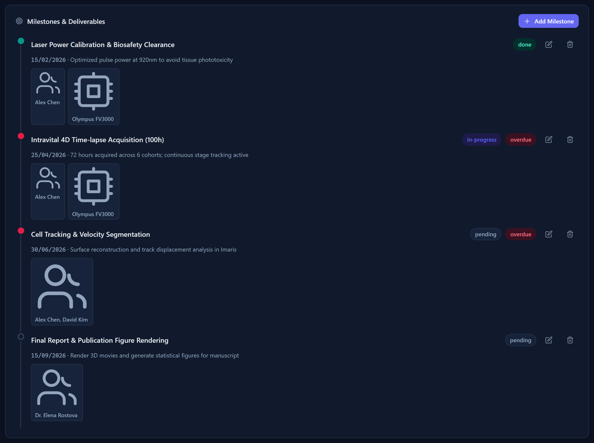

Chapter 5
Milestones
Milestones are the checkpoints inside a project — the things that need to happen, by when, and who is responsible for them.
What you'll be able to do
- Add a milestone to a project, with a due date and a note.
- Assign one or more owners (people) and instruments to a milestone.
- Set a milestone's status directly — pending, in progress, or done — from a single chooser.
- Understand what makes a milestone show up as "overdue."
- Delete a milestone you created by mistake — and know why the confirm dialog looks the way it does.
Adding a milestone
Milestones live inside a project. You'll find them on the project's detail page, in the Milestones section.
- Open the project the milestone belongs to (see Projects if you need a refresher on finding or creating one).
- Find the Milestones section on the project page and choose Add Milestone.
- Type a short, clear title — this is what shows up on the Dashboard and in lists, so make it specific ("Order objective lens," not "Stuff").
- Pick a due date.
- Optionally, add a note with more detail.
- Optionally, assign one or more owners (the people responsible) and one or more instruments this milestone concerns.
- Save.

Owners and instruments
You can attach two kinds of chips to a milestone:
- Owners — the people responsible for getting it done. You can add more than one.
- Instruments — the equipment this milestone depends on or concerns, if any.
🔍 Why it works this way. If you retire a person or an instrument (see People & Labs and Instruments), they don't disappear from milestones that already list them — a retired person keeps showing as an owner chip on the milestones they were already assigned to. This is deliberate: the milestone is a historical record of who was responsible, and that fact doesn't change just because the person has since left. The only thing retiring affects is whether they show up as a choice for new assignments — a retired person or instrument will not appear in the picker's dropdown list, but their existing chip stays put and stays visible.
Setting a milestone's status
Every milestone is in one of three states: pending, in progress, or done. Clicking a milestone's status marker opens a small chooser listing all three — pick the one you want directly, in a single click.
- Find the milestone's status marker (on the project page, on the Dashboard's upcoming/overdue lists, or in Today's Agenda).
- Click it — a small chooser opens, listing pending, in progress, and done.
- Click the status you want. The chooser closes and the milestone updates immediately.
💡 Tip. This same chooser works wherever a milestone's status shows up — the project page, the Dashboard's upcoming/overdue lists, and Today's Agenda — so you never have to open the project just to correct a status. See Dashboard & Today's Agenda.
🔍 Why it works this way. Jumping straight to the status you mean, rather than clicking through the others to get there, means fixing a mistaken "done" (or setting a milestone straight to "done" when you're catching up on paperwork) is always exactly one click, no matter which status it starts from.
What makes a milestone "overdue"
A milestone counts as overdue when its due date has already passed and it isn't marked done yet. A milestone due today is not yet overdue; one due yesterday and still pending or in progress is.
Overdue milestones show up in two places: the Dashboard's overdue tile and feed (see Dashboard & Today's Agenda), and Today's Agenda. Marking a milestone done removes it from both immediately.
🧪 Try it. Open the demo sandbox (Settings → Open Demo Sandbox — see Getting Started), then open a project with milestones and set one due date to yesterday without marking it done. Go to the Dashboard and confirm it now appears in the overdue feed.
Deleting a milestone
If you created a milestone by mistake, you can delete it outright — unlike people, instruments, and projects, milestones don't have a "retire" option, because a milestone doesn't carry the same kind of history that needs protecting.
- Open the milestone you want to remove.
- Choose Delete.
- A confirmation dialog appears — read it carefully (see the callout below), then confirm.

🔍 Why it works this way. On every dangerous confirmation in this app, the eye-catching red button is the safe choice — Cancel — not the destructive one. That's on purpose: if your eye is drawn to the red button by habit, it should pull you away from the mistake, not into it. Always read the button labels rather than going by color alone.
Check yourself
You accidentally set a milestone's status to "done." How do you get it back to pending?
Click the status marker to open the chooser, then pick "pending" directly — you can jump to any of the three statuses in one click, from whichever status it's currently in.
A milestone owner retired last month, but the milestone still shows their name as a chip. Is that a bug?
No — that's intentional. Retired people keep any chips they were already assigned before they retired, because the milestone is a record of who was responsible at the time. They just won't appear as a choice for new milestones.
A milestone is due today and still pending. Does it show up as overdue?
No. "Overdue" means the due date has already passed and the milestone isn't done — a milestone due today isn't overdue yet.